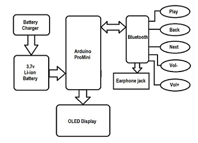

Our Final Year Major Project
Why Smart Glasses?
As technology is growing rapidly and integrating itself to all aspects of people’s life, designers and developers tried to provide a more pleasant experience of technology to people. One of the technology trends which aim to make life easier is wearable computing. Wearable’s aim to assist people to be in control of their life by augmenting the real with extra information constantly and ubiquitously. One of the growing trends of wearable computing is Head Mounted Displays (HMD), as the head is a great gateway to receive audio, visual and hectic information. Also it is a futuristic gadget which is a useful technique for all kinds of people including handicapped/disabled.
IoT Technology
Internet of Things raises significant challenges that could stand in the way of realizing its potential benefits. Attention-grabbing headlines about the hacking of Internet-connected devices, surveillance concerns, and privacy fears already have captured public attention.
Use of Arduino
Arduino has enabled enterprises to transform their business model or existing products through rapid IoT deployment.Millions of users and thousands of companies worldwide already use Arduino as an innovation platform and easy to integrate hardware-software.
Android Technology
Android is a powerful operating system and it supports a large number of applications in Smartphones. These applications are more comfortable and advanced for users. The android is an open-source operating system that means that it’s free and anyone can use it. The android has got millions of apps available that can help you manage your life one or another way and it is available to low cost in the market for that reason android is very popular.
Portable
Portable devices are primarily battery powered devices with base computing resources in the form of a processor, memory, and storage and network access. The latest portable devices are thin and lightweight, making them easy to carry and hold. This was not the case for earlier attempts at portable computers. Small plug-and-play devices such as USB drives, external hard disks and webcams can also be called portable devices.
About our Project
Recent developement in smart devices have led human - machine interaction in novel ways.These devices aims at providing ease to user in various ways such as handsfree which made it portable, live recording and broadcasting through connection of various applications. This paper insights the working of smart glass made using Aurdino pro-mini and OLED and its interconnection with help of bluetooth HC-05 and using andriod application which was developed with C programming . Many design challenges were also explored with future scope and the use of the wearable technology that is smart glass applications were explored.
# Existing Smart Glass
In this digitally exploring world, emerging technologies should have clear view on their product use and that is the reason why Google Glass which was invented in 2012 by Google-X failed.The Google Glass resembled eyeglasses lens replaced by OHMD or HUD.
It includes various applications in medical field such as follow:
1. Augmedix was app developed for health monitoring of patients to doctors can also be also called as tele consultation made possible through this app.
2. Google glass made possible surgical procedures such as liver bioscopy,heart surgery and neuro surgeries including instant and rapid testing analysis stream live to other location so that remote doctors can help hands on live surgery to perform.
3. It also helped in media coverage so that live incidents recording and reporting made easy to broadcast.
4. It helped many visually impaired humans to perform various generic activities by access to voice commands simply activating by saying OK GOOGLE.
Model Design
The OLED display
It doesn’t require backlight, which results in a very nice contrast in dark environments. 2. Its pixels consume energy only when they are on, so the OLED display consumes less power when compared with other displays.
HC-06 bluetooth module
It is best option when short distance wireless communication of less than 100 meters.The module works on Bluetooth 2.0 communication protocol and act as a slave device. This is cheapest method for wireless data transmission and more flexible.
ARDUINO
These boards are popular because of ease of understanding and application. Also the ARDUINO is an open source platform where one can get all related data and original module schematics.We choose PRO MINI.
Hardware Requirements
In our project we have used a Arduino Pro Mini board to control all the operations.
• The Arduino Pro Mini is dedicated for the users who require flexibility, low-cost, and small size.
a note that there are 2 versions of this board –one is operating at 5v and another is operating at 3.3v.• Here we used arduino pro mini with 3.3v operating voltage.and it is programmed using the Arduino Software (IDE), our Integrated Development Environment which is common to all our boards and it runs online as well as offline.
• The 4 pin OLED and Bluetooth module HC-05 can also work on 3.3v, so all of these modules can be powered by a single 3.7v Li-on.
• Lithium-ion battery or Li-on battery is the compact , light weight battery,rechargable and is the perfect option for portable or wearable devices.
• Li-on is of 3.7v so here a problem arises that all modules required 3.3v but because of 3.7v Li-on battery the all modules gets damaged.To overcome this issue we are connecting Li-on battery to raw pin of arduino pro mini which converts it into 3.3v.
The following operations that are applied during the whole project:
• Receiving Notifications e.g.calling,text messages,whatsapp notification.
• Global Positioning System.
• Time,Date and Battery Percentage.
1) Notifications: Android notifications are supported on Glass through Notification Sync. When the Android system sends a notification on a user’s phone, it also appears on OLED screen.Notifications on OLED screen works synchronously with your Android mobile phone. When you cancel the notification on either of the devices, the system rejects the notification on the other one. Notification may include the whatsapp notification,text messages or calling notification.
2) GPS: The GPS NEO-6M receives a signal through each GPS satellite. The satellites will transmit the particular time the signals are sent. So travel time of the GPS signals from three satellites and their exact position in the sky, the GPS receiver can appoint your position in 3 dimensions - East, North and Altitude.
3) Time,Date and Battery Percentage : When Arduino pro mini and OLED interface with Android App,it will access the data of mobile through bluetooth connectivity and it will display on OLED screen